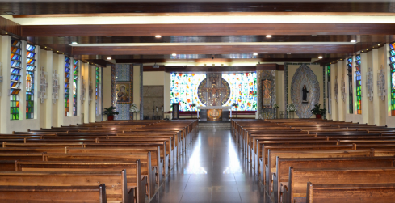
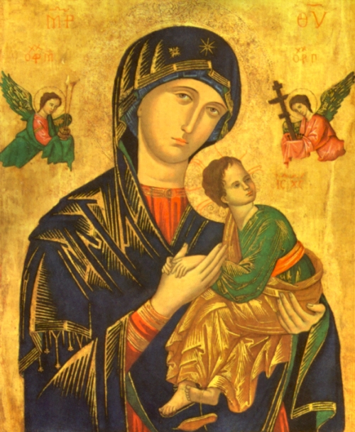
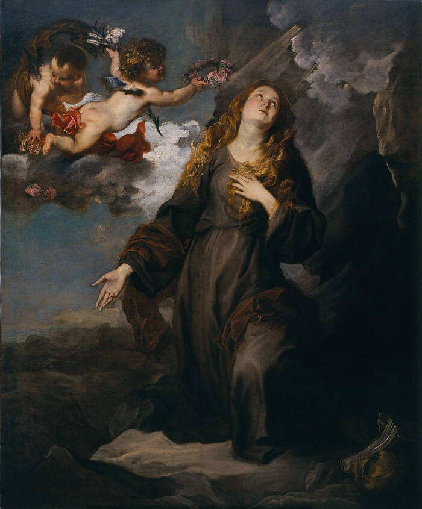

Missas
- Segunda
- 19h30
- Terça a sexta
- 7h e 19h30
- Sábado
- 16h30
- Domingo
- 7h30, 10h, 12h e 19h
A Eucaristia é a fonte e o ápice da vida cristã (CIC 1324).
Não foi possível tocar o canto.
Venha celebrar a Missa, confessar-se ou rezar conosco.
Avenida Mascote, 1179 · Ao lado da Cúria

A Eucaristia é a fonte e o ápice da vida cristã (CIC 1324).
Segunda-feira
Durante a Missa das 19h30.
Terça a sexta
Após a Missa das 7h e das 17h30 às 19h15.
A ficha diocesana não informa se é preciso agendar. Consulte a secretaria.
Na Reconciliação, recebemos o perdão de Deus e nos reconciliamos com a Igreja (CIC 1422).
Horários habituais da matriz: Diocese de Santo Amaro, consultada em . Para feriados e alterações, confirme com a secretaria.
Nenhum evento especial confirmado nesta agenda. Acompanhe os avisos no Instagram da paróquia ou consulte a secretaria.
A paróquia anunciou dias de oração e Missas com padres convidados na novena, além de comida típica, brincadeiras e música ao vivo na festa de 27 e 28 de junho.
O bispo se reuniu com as lideranças, visitou doentes e celebrou a Missa com as crianças na matriz. Registro da Diocese.
Para os próximos encontros, acompanhe o Instagram ou o Facebook da paróquia.
Pelo Batismo, nascemos para a vida em Cristo e passamos a fazer parte da Igreja (Mt 28,19; CIC 1213). Para batizar seu filho, pergunte à secretaria sobre a preparação de pais e padrinhos, os documentos e as datas.
No Matrimônio, os esposos batizados firmam uma aliança para toda a vida, elevada por Cristo à dignidade de sacramento (Mt 19,4–6; CIC 1601). Se vocês vão se casar na Igreja, a secretaria pode orientar sobre a preparação, as datas e os documentos.
Antes dos vitrais da matriz, a comunidade se reunia numa garagem da Rua das Flechas, no Jardim Prudência. Ali funcionavam a igreja e a casa paroquial.
Frei Rosário Pirrello, nascido em Palermo, é nomeado vigário da nova paróquia.
Derval Junqueira de Aquino doa 4 mil metros quadrados. Frei Rosário e os paroquianos começam pelo salão e pela casa paroquial.
A Cúria inaugura sua sede em parte do terreno da igreja. Durante as obras da nova matriz, acolhe as atividades paroquiais.
Um ano depois de assumir a paróquia e iniciar a construção da nova igreja, Pe. Gennaro Antonio Di Luccia traz da Sicília a imagem de Santa Rosália. Seu nome passa a integrar o da paróquia.
A matriz e a Cúria continuam lado a lado na Avenida Mascote.
Em 5 de março de 2020, Dom José Negri celebrou na matriz seus 14 anos de ordenação episcopal. As fotos mostram os vitrais da igreja e a comunidade reunida para a Missa.
História no antigo site paroquial · Fotografias: Pascom Diocesana · 5 de março de 2020


Nas bodas de Caná, Maria percebeu que faltava vinho, falou com Jesus e pediu aos serventes que fizessem o que Ele dissesse. Sua atenção à necessidade dos noivos é um caminho de caridade (Jo 2,1–11; CIC 2618).
Como imitá-la: Perceba uma necessidade que ninguém pediu em voz alta. Reze por essa pessoa e ofereça uma ajuda concreta.
Depois de receberem o ícone de Pio IX, os Redentoristas o levaram em procissão à igreja de Santo Afonso, onde voltou à veneração pública. Rezamos com Maria e pedimos sua intercessão, confiando-nos a Cristo (CIC 2677–2679).
Como viver essa devoção: Reze uma Ave-Maria por alguém que está com medo ou enfrenta uma decisão difícil.
Segundo o santuário de Palermo, Rosália viveu como eremita no Monte Pellegrino, na Sicília. Seu recolhimento nos recorda o convite de Jesus a rezar ao Pai no segredo (Mt 6,6).
Como imitá-la: Separe alguns minutos sem o celular. Leia um trecho do Evangelho e fique em silêncio diante de Deus.
Quando a peste atingia Palermo, foram encontrados na gruta do Monte Pellegrino os restos venerados como relíquias de Rosália. O santuário guarda a memória da oração da cidade e da devoção à santa. Hoje também somos chamados a rezar uns pelos outros (Tg 5,16; CIC 956).
Como imitá-la: Reze por um doente pelo nome e pergunte à família se há algo em que você possa ajudar.
Saiba mais sobre o ícone do Perpétuo Socorro e sobre Santa Rosália, lembrada em 4 de setembro.
Nossa Senhora do Perpétuo Socorro, rogai por nós.
Santa Rosália, rogai por nós.
Avenida Mascote, 1179 · Vila Mascote, São Paulo
Segunda, 11h–13h e 14h–19h
Terça a sexta, 8h–19h
Sábado, 8h–12h e 13h–17h
nsdoperpetuosocorro@santoamaro.org.br
Pároco: Pe. Antônio Henrique Alves dos Santos
Vigários: Pe. José Francisco Vignolle da Silva e Pe. Andrés Echavarría Machado
Dados de atendimento: Diocese de Santo Amaro, consultada em .
Avenida Mascote, 1179 · Vila Mascote, São Paulo
Ao lado da Cúria da Diocese de Santo Amaro.